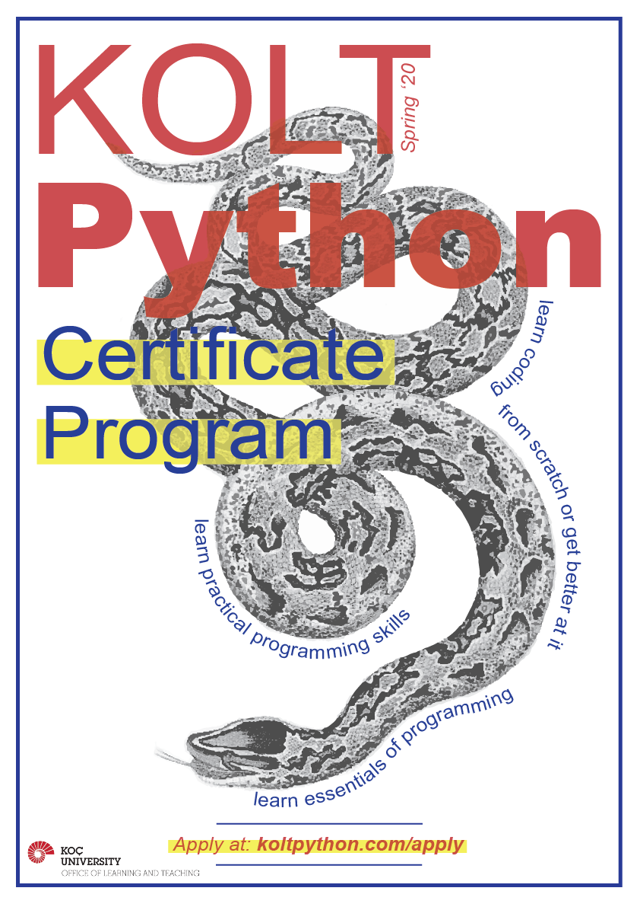

If you want to start programming but don’t know where to start on your own, you are invited to KOLT’s new certificate program. Program covers beginner level programming and problem solving principles and their implementation by using Python.
Program is designed for students with no background in programming and the materials are prepared for absolute beginners.
Program will be in English and students from all majors are welcomed!
**Only 20 students will be selected due to capacity**

Duration: 12 weeks
Weekly meeting time: Monday & Wednesday 17:30 - 18:45
Location: CASE 133
All you need to do is apply using this form until 23:59 pm, Saturday Feb.16.
You will be informed about your application status on Sunday and first class will be on Monday Feb. 18 17:30-18:45
See you in class!